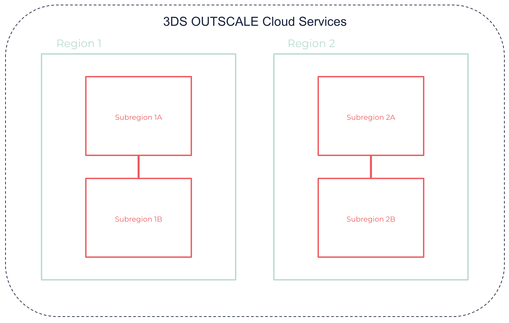

About Regions and Subregions
OUTSCALE services are available in several locations worldwide. The OUTSCALE infrastructure is composed of different Regions and Subregions isolated from one another, where you can create your Cloud resources.
General Information
Regions
A Region is a geographical area where you can host Cloud resources. Regions are independent from one another, and do not share resources.
When you deploy resources, the Region is specified in the endpoint of the API request. Endpoints are URLs that provide the entry point to a Cloud service. For more information, see API Endpoints Reference.
|
Data is never automatically transferred between Regions. The data of your resources remains in the Region where you stored it, and is protected by local laws. You can however copy your account or resources between different Regions. For more information, see About Your Account. |
Communication between Regions is typically done via the internet. For more information about the public IP ranges available for each Region, see OUTSCALE Public IPs.
Subregions
Inside a Region, a Subregion is a distinct location which typically corresponds to a physical datacenter. Subregions are isolated from one another, but low-latency communication between Subregions in the same Region is enabled with fiber-optic links.
While some types of resources are deployed in the Region as a whole, some are deployed in specific Subregions. You can choose to spread resources in different Subregions to isolate them from one another in the physical infrastructure, and thus reduce risks in case of unavailability.

Mapping Between Subregions and Physical Zones
This table below presents the OUTSCALE public Regions, Subregions, and physical zones:
| Region | Subregions | Physical Zones |
|---|---|---|
eu-west-2 |
eu-west-2a or eu-west-2b |
PAR1 (Magny-les-Hameaux, France) |
eu-west-2a or eu-west-2b |
PAR4 (Pantin, France) |
|
us-east-2 |
us-east-2a or us-east-2b |
NJ1 (Clifton, New Jersey, United States) |
us-east-2a or us-east-2b |
NJ2 (Secaucus, New Jersey, United States) |
|
us-west-1 |
us-west-1a or us-west-1b |
SV1 (San Jose, California, United States) |
us-west-1a or us-west-1b |
SV2 (Santa Clara, California, United States) |
|
cloudgouv-eu-west-1 |
cloudgouv-eu-west-1a or cloudgouv-eu-west-1b or cloudgouv-eu-west-1c |
SEC1 (Pantin, France) |
cloudgouv-eu-west-1a or cloudgouv-eu-west-1b or cloudgouv-eu-west-1c |
SEC2 (Magny-les-Hameaux, France) |
|
cloudgouv-eu-west-1a or cloudgouv-eu-west-1b or cloudgouv-eu-west-1c |
SEC3 (Aubergenville, France) |
|
ap-northeast-1 |
ap-northeast-1a or ap-northeast-1b |
JPN1 (Tokyo, Japan) |
ap-northeast-1a or ap-northeast-1b |
JPN2 (Tokyo, Japan) |
|
The exact mapping between Subregions and physical zones depends on the account. The mapping is randomly defined at each account creation and cannot be changed afterward. For example:
This random mapping helps distribute resources evenly across the Region, instead of a physical zone being used as the primary one over the other one. |
|
Related Pages